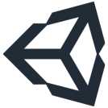

Game.
Zaterdag 18 mei 2024.
Unity game engine.
Had al een beetje geknutseld met Unity. Wat dingen uitgezocht. Maar nu kan ik me in de verte iets voorstellen van de code binnen de editor. Het is weer iets anders als python. Unity werkt op C#. Maar Co de Piloot helpt me door de winter. Je kan ook naar WebGL bouwen.
Proberen maar! Tik hem aan voor Unity. Je kan een stukje chaufferen op het nieuwe verkeersplein Hooipolder. A27/A59 bij Raamsdonksveer. De wagen kan je bedienen met de pijltoetsen of de WASD toetsen. Remmen met de spacebar en lampen aan en uit met toets 1 en 2. De rijksweg heeft af en toe nog gaten, aan het einde van het asfalt heb ik in alle richtingen een verbinding gemaakt. De tweede link gaat naar een opstelling zoals die zou kunnen voorkomen in een rijkswegsimulatie. Daar heb ik cctv camera `s aan elkaar geknoopt. Het is ook een test, kijken of het uberhaupt werkt. In de eerste build werkte de bediening van de camera niet. Die doet het nu wel. Pijltoetsen of WASD voor het pannen van de camera. '=' toets voor inzoomen, '-' toets voor uitzoomen. En de 'r' voor een camera reset.
Hoe de hiearchy moet worden is nog geen afgesloten geheel. De camera `s bestaan op deze manier elk in hun eigen scene. Eigenlijk niet zo handig. Als er wijzigingen zijn, kan ik weer overnieuw beginnen. Aan de andere kant nu werkt het, de bestanden zijn vederlicht zonder auto of de daarbij horende game-physics. En in elke scene een prefab van het stuk snelweg erin janken en je bent klaar. Dan hoef je alleen de prefab te opdeten.
Karren jonguh!